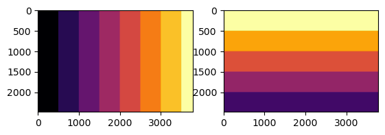
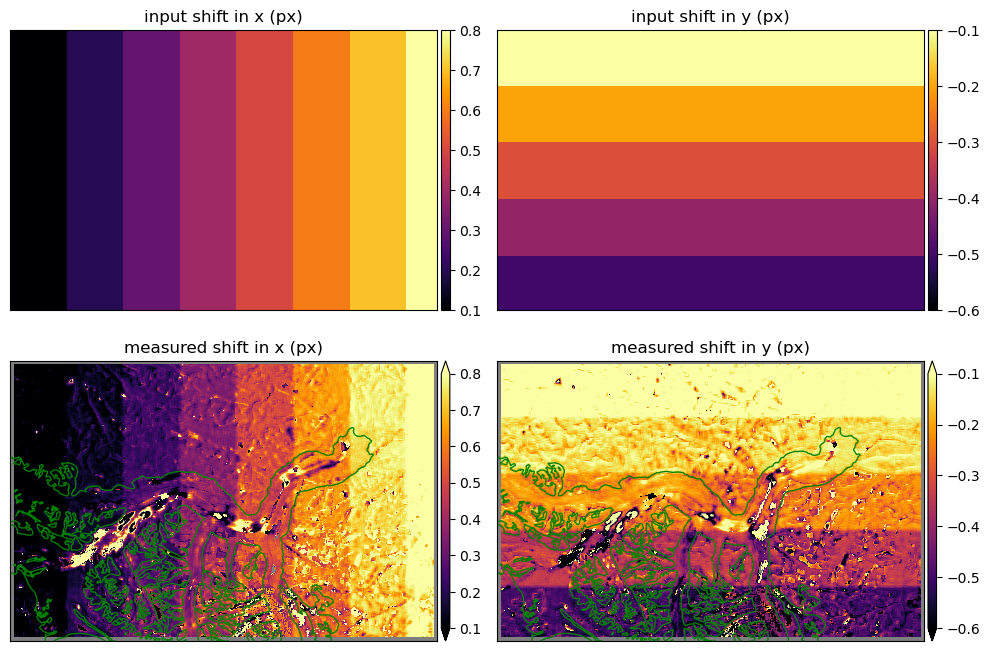

Figure 6 script
Figure 6 script¶
This notebook requires additional steps to be reproduced:
Make sure you have installed all necessary packages, including vmap and others specified in the cell below.
Update the input file paths so they point to the actual files on your local machine. These files include the source Landsat 8 image (
LC08_L1TP_061018_20180304_20180319_01_T1_B8_s.TIF, downloadable at https://doi.org/10.17605/OSF.IO/HE7YR) and the RGI glacier outline (01_rgi60_Alaska.shp, downloadable at https://doi.org/10.7265/4m1f-gd79).
import numpy as np
import matplotlib.pyplot as plt
import os,sys,glob
from pygeotools.lib import geolib,iolib,warplib,malib
from imview import pltlib
import rasterio
import geopandas as gpd
%matplotlib inline
%cd /nobackup/sbhusha1/feature_tracking_wg
img_fn = 'Cropped/LC08_L1TP_061018_20180304_20180319_01_T1_B8_s.TIF'
def create_synthetic_offset(imgfile, mode='subpixel', block_size=500):
"""
imgfile: str, geotiff file path
mode: 'subpixel' or 'multipixel'
block_size: int, increment block size
----
returns:
shift_arx: np.ndarray, offset field (x), in pixels
shift_ary: np.ndarray, offset field (y), in pixels
----
"""
with rasterio.open(imgfile) as src:
data_shape = (src.height, src.width)
idxy, idxx = np.indices(data_shape)
# for Numpy array, first is row element (-> geotiff's y direction, height)
# and second is column element (-> geotiff's x direction, width)
if mode == 'subpixel':
shift_arx = idxx // block_size
shift_arx = 0.1 * shift_arx + 0.1
shift_ary = idxy // block_size
shift_ary = -0.1 * shift_ary - 0.1
elif mode == 'multipixel':
shift_arx = 1 + idxx // block_size
shift_ary = -1 - idxy // block_size
else:
raise ValueError('Mode is not defined.')
return shift_arx, shift_ary
def apply_synthetic_offset(imgfile, shift_arx, shift_ary, spline_order=1):
"""
imgfile: str, geotiff file path
shift_arx: np.ndarray, offset field (x) from gftt.create_synthetic_offset
shift_ary: np.ndarray, offset field (y) from gftt.create_synthetic_offset
----
returns:
----
"""
import rasterio
from scipy.ndimage import map_coordinates
with rasterio.open(imgfile) as src:
data_shape = (src.height, src.width)
data = src.read(1)
idxy, idxx = np.indices(data_shape)
shifted_y = idxy + shift_ary
shifted_x = idxx + shift_arx
shifted_yx = np.vstack((shifted_y.flatten(), shifted_x.flatten()))
shifted_val = map_coordinates(data, shifted_yx, order=spline_order, mode='nearest')
shifted_val = np.reshape(shifted_val, data_shape)
return shifted_val
data_shape = img.shape
shift_arx, shift_ary = create_synthetic_offset(img_fn)
shift_arx
array([[0.1, 0.1, 0.1, ..., 0.8, 0.8, 0.8],
[0.1, 0.1, 0.1, ..., 0.8, 0.8, 0.8],
[0.1, 0.1, 0.1, ..., 0.8, 0.8, 0.8],
...,
[0.1, 0.1, 0.1, ..., 0.8, 0.8, 0.8],
[0.1, 0.1, 0.1, ..., 0.8, 0.8, 0.8],
[0.1, 0.1, 0.1, ..., 0.8, 0.8, 0.8]])
shifted_image = apply_synthetic_offset(img_fn, shift_arx, shift_ary)
outfn = os.path.splitext(img_fn)[0]+'_subpixel_shift.tif'
iolib.writeGTiff(shifted_image,outfn,src_ds=ds_list[2],ndv=0)
f,ax = plt.subplots()
pltlib.iv(iolib.fn_getma(outfn),ax=ax,cmap='gray')
<Axes: >
!vmap.py $img_fn $outfn -dt none
2023-07-08 02:11:05.369578
2023-07-08 09:11:05.369647 UTC
Warping all inputs to the following:
Resolution: 15.0
Extent: [584872.5, 6717982.5, 641572.5, 6755182.5]
Projection: '+proj=utm +zone=7 +datum=WGS84 +units=m +no_defs'
Resampling alg: average
1 of 2: Cropped/LC08_L1TP_061018_20180304_20180319_01_T1_B8_s.TIF
2 of 2: Cropped/LC08_L1TP_061018_20180304_20180319_01_T1_B8_s_subpixel_shift.tif
/nobackupp16/swbuild3/sbhusha1/StereoPipeline-3.2.1-alpha-2023-04-19-x86_64-Linux/bin/stereo_pprc -t pinhole --threads 56 --alignment-method None --corr-kernel 35 35 --corr-max-levels 5 --corr-timeout 1200 --subpixel-mode 1 --subpixel-kernel 35 35 --stereo-algorithm asp_bm --erode-max-size 1024 LC08_L1TP_061018_20180304_20180319_01_T1_B8_s__LC08_L1TP_061018_20180304_20180319_01_T1_B8_s_subpixel_shift_vmap_minm_35px_spm1/LC08_L1TP_061018_20180304_20180319_01_T1_B8_s_warp.tif LC08_L1TP_061018_20180304_20180319_01_T1_B8_s__LC08_L1TP_061018_20180304_20180319_01_T1_B8_s_subpixel_shift_vmap_minm_35px_spm1/LC08_L1TP_061018_20180304_20180319_01_T1_B8_s_subpixel_shift_warp.tif /nobackupp16/swbuild3/sbhusha1/pip_git_sw/vmap/vmap/dummy.tsai /nobackupp16/swbuild3/sbhusha1/pip_git_sw/vmap/vmap/dummy2.tsai LC08_L1TP_061018_20180304_20180319_01_T1_B8_s__LC08_L1TP_061018_20180304_20180319_01_T1_B8_s_subpixel_shift_vmap_minm_35px_spm1/vmap
[ 2023-Jul-08 02:11:24 ] : Stage 0 --> PREPROCESSING
--> Setting number of processing threads to: 56
Stereo file ./stereo.default could not be found. Will use default settings and command line options only.
Writing log info to: LC08_L1TP_061018_20180304_20180319_01_T1_B8_s__LC08_L1TP_061018_20180304_20180319_01_T1_B8_s_subpixel_shift_vmap_minm_35px_spm1/vmap-log-stereo_pprc-07-08-0211-78852.txt
Using session: pinhole
Loading camera model: LC08_L1TP_061018_20180304_20180319_01_T1_B8_s__LC08_L1TP_061018_20180304_20180319_01_T1_B8_s_subpixel_shift_vmap_minm_35px_spm1/LC08_L1TP_061018_20180304_20180319_01_T1_B8_s_warp.tif /nobackupp16/swbuild3/sbhusha1/pip_git_sw/vmap/vmap/dummy.tsai
Loading camera model: LC08_L1TP_061018_20180304_20180319_01_T1_B8_s__LC08_L1TP_061018_20180304_20180319_01_T1_B8_s_subpixel_shift_vmap_minm_35px_spm1/LC08_L1TP_061018_20180304_20180319_01_T1_B8_s_subpixel_shift_warp.tif /nobackupp16/swbuild3/sbhusha1/pip_git_sw/vmap/vmap/dummy2.tsai
Georef 1: -- Proj.4 Geospatial Reference Object --
PROJCS name: WGS 84 / UTM zone 7N
Transform : Matrix3x3((15,0,584872)(0,-15,6.75518e+06)(0,0,1))
Geodetic Datum --> Name: WGS_1984 Spheroid: WGS 84 Semi-major axis: 6378137 Semi-minor axis: 6356752.3142451793 Meridian: Greenwich at 0 Proj4 Str: +datum=WGS84
Proj.4 String: +proj=utm +zone=7 +units=m
Pixel Interpretation: pixel as point
longitude range: [-180, 180]
Georef 2: -- Proj.4 Geospatial Reference Object --
PROJCS name: WGS 84 / UTM zone 7N
Transform : Matrix3x3((15,0,584872)(0,-15,6.75518e+06)(0,0,1))
Geodetic Datum --> Name: WGS_1984 Spheroid: WGS 84 Semi-major axis: 6378137 Semi-minor axis: 6356752.3142451793 Meridian: Greenwich at 0 Proj4 Str: +datum=WGS84
Proj.4 String: +proj=utm +zone=7 +units=m
Pixel Interpretation: pixel as point
longitude range: [-180, 180]
Warning: It appears that the input images are map-projected. In that case a DEM needs to be provided for stereo to give correct results.
Warning: Your cameras appear to be in the same location!
You should double check your given camera
models as most likely stereo won't be able
to triangulate or perform epipolar rectification.
Distance between camera centers in meters: 0.
Using image files: LC08_L1TP_061018_20180304_20180319_01_T1_B8_s__LC08_L1TP_061018_20180304_20180319_01_T1_B8_s_subpixel_shift_vmap_minm_35px_spm1/LC08_L1TP_061018_20180304_20180319_01_T1_B8_s_warp.tif, LC08_L1TP_061018_20180304_20180319_01_T1_B8_s__LC08_L1TP_061018_20180304_20180319_01_T1_B8_s_subpixel_shift_vmap_minm_35px_spm1/LC08_L1TP_061018_20180304_20180319_01_T1_B8_s_subpixel_shift_warp.tif
Using camera files: /nobackupp16/swbuild3/sbhusha1/pip_git_sw/vmap/vmap/dummy.tsai, /nobackupp16/swbuild3/sbhusha1/pip_git_sw/vmap/vmap/dummy2.tsai
Computing statistics for left
Using downsample scale: 4
Writing stats file: LC08_L1TP_061018_20180304_20180319_01_T1_B8_s__LC08_L1TP_061018_20180304_20180319_01_T1_B8_s_subpixel_shift_vmap_minm_35px_spm1/vmap-LC08_L1TP_061018_20180304_20180319_01_T1_B8_s_warp-stats.tif
left: [ lo: 6430 hi: 46285 mean: 18455.6 std_dev: 8616.76 ]
Computing statistics for right
Using downsample scale: 4
Writing stats file: LC08_L1TP_061018_20180304_20180319_01_T1_B8_s__LC08_L1TP_061018_20180304_20180319_01_T1_B8_s_subpixel_shift_vmap_minm_35px_spm1/vmap-LC08_L1TP_061018_20180304_20180319_01_T1_B8_s_subpixel_shift_warp-stats.tif
right: [ lo: 6444 hi: 45544 mean: 18432.6 std_dev: 8477.22 ]
--> Applying alignment method: none
--> Normalizing globally to: [1222.04 35689.1]
--> Writing pre-aligned images.
--> Writing: LC08_L1TP_061018_20180304_20180319_01_T1_B8_s__LC08_L1TP_061018_20180304_20180319_01_T1_B8_s_subpixel_shift_vmap_minm_35px_spm1/vmap-L.tif.
L: [******************************************************] Complete!
--> Writing: LC08_L1TP_061018_20180304_20180319_01_T1_B8_s__LC08_L1TP_061018_20180304_20180319_01_T1_B8_s_subpixel_shift_vmap_minm_35px_spm1/vmap-R.tif.
R: [******************************************************] Complete!
--> Generating image masks...
Writing masks: LC08_L1TP_061018_20180304_20180319_01_T1_B8_s__LC08_L1TP_061018_20180304_20180319_01_T1_B8_s_subpixel_shift_vmap_minm_35px_spm1/vmap-lMask.tif LC08_L1TP_061018_20180304_20180319_01_T1_B8_s__LC08_L1TP_061018_20180304_20180319_01_T1_B8_s_subpixel_shift_vmap_minm_35px_spm1/vmap-rMask.tif.
Mask L: [***************************************************] Complete!
Mask R: [***************************************************] Complete!
--> Creating previews. Subsampling by 0.489914 by using a tile of size 256 and 56 threads.
Sub L: [*************************************************] Complete!
Sub R: [*************************************************] Complete!
Sub L Mask: [********************************************] Complete!
Sub R Mask: [********************************************] Complete!
[ 2023-Jul-08 02:11:32 ] : PREPROCESSING FINISHED
/nobackupp16/swbuild3/sbhusha1/StereoPipeline-3.2.1-alpha-2023-04-19-x86_64-Linux/bin/stereo_corr --compute-low-res-disparity-only -t pinhole --threads 56 --alignment-method None --corr-kernel 35 35 --corr-max-levels 5 --corr-timeout 1200 --subpixel-mode 1 --subpixel-kernel 35 35 --stereo-algorithm asp_bm --erode-max-size 1024 LC08_L1TP_061018_20180304_20180319_01_T1_B8_s__LC08_L1TP_061018_20180304_20180319_01_T1_B8_s_subpixel_shift_vmap_minm_35px_spm1/LC08_L1TP_061018_20180304_20180319_01_T1_B8_s_warp.tif LC08_L1TP_061018_20180304_20180319_01_T1_B8_s__LC08_L1TP_061018_20180304_20180319_01_T1_B8_s_subpixel_shift_vmap_minm_35px_spm1/LC08_L1TP_061018_20180304_20180319_01_T1_B8_s_subpixel_shift_warp.tif /nobackupp16/swbuild3/sbhusha1/pip_git_sw/vmap/vmap/dummy.tsai /nobackupp16/swbuild3/sbhusha1/pip_git_sw/vmap/vmap/dummy2.tsai LC08_L1TP_061018_20180304_20180319_01_T1_B8_s__LC08_L1TP_061018_20180304_20180319_01_T1_B8_s_subpixel_shift_vmap_minm_35px_spm1/vmap
--> Setting number of processing threads to: 56
Stereo file ./stereo.default could not be found. Will use default settings and command line options only.
Writing log info to: LC08_L1TP_061018_20180304_20180319_01_T1_B8_s__LC08_L1TP_061018_20180304_20180319_01_T1_B8_s_subpixel_shift_vmap_minm_35px_spm1/vmap-log-stereo_corr-07-08-0211-79772.txt
Using session: pinhole
Loading camera model: LC08_L1TP_061018_20180304_20180319_01_T1_B8_s__LC08_L1TP_061018_20180304_20180319_01_T1_B8_s_subpixel_shift_vmap_minm_35px_spm1/LC08_L1TP_061018_20180304_20180319_01_T1_B8_s_warp.tif /nobackupp16/swbuild3/sbhusha1/pip_git_sw/vmap/vmap/dummy.tsai
Loading camera model: LC08_L1TP_061018_20180304_20180319_01_T1_B8_s__LC08_L1TP_061018_20180304_20180319_01_T1_B8_s_subpixel_shift_vmap_minm_35px_spm1/LC08_L1TP_061018_20180304_20180319_01_T1_B8_s_subpixel_shift_warp.tif /nobackupp16/swbuild3/sbhusha1/pip_git_sw/vmap/vmap/dummy2.tsai
Georef 1: -- Proj.4 Geospatial Reference Object --
PROJCS name: WGS 84 / UTM zone 7N
Transform : Matrix3x3((15,0,584872)(0,-15,6.75518e+06)(0,0,1))
Geodetic Datum --> Name: WGS_1984 Spheroid: WGS 84 Semi-major axis: 6378137 Semi-minor axis: 6356752.3142451793 Meridian: Greenwich at 0 Proj4 Str: +datum=WGS84
Proj.4 String: +proj=utm +zone=7 +units=m
Pixel Interpretation: pixel as point
longitude range: [-180, 180]
Georef 2: -- Proj.4 Geospatial Reference Object --
PROJCS name: WGS 84 / UTM zone 7N
Transform : Matrix3x3((15,0,584872)(0,-15,6.75518e+06)(0,0,1))
Geodetic Datum --> Name: WGS_1984 Spheroid: WGS 84 Semi-major axis: 6378137 Semi-minor axis: 6356752.3142451793 Meridian: Greenwich at 0 Proj4 Str: +datum=WGS84
Proj.4 String: +proj=utm +zone=7 +units=m
Pixel Interpretation: pixel as point
longitude range: [-180, 180]
Warning: It appears that the input images are map-projected. In that case a DEM needs to be provided for stereo to give correct results.
Warning: Your cameras appear to be in the same location!
You should double check your given camera
models as most likely stereo won't be able
to triangulate or perform epipolar rectification.
Distance between camera centers in meters: 0.
--> Using LOG pre-processing filter with 1.5 sigma blur.
[ 2023-Jul-08 02:11:35 ] : Stage 1 --> CORRELATION
[ 2023-Jul-08 02:11:35 ] : Stage 1 --> LOW-RESOLUTION CORRELATION
No IP file found, computing IP now.
* Detecting interest points.
--> Matching interest points using homography.
Looking for IP in left image...
Using 559 interest points per tile (1024^2 px).
Detecting IP
Removing IP near nodata with radius 4
Building descriptors
Found interest points: 5000
Recording interest points to file: LC08_L1TP_061018_20180304_20180319_01_T1_B8_s__LC08_L1TP_061018_20180304_20180319_01_T1_B8_s_subpixel_shift_vmap_minm_35px_spm1/vmap-L.vwip
Looking for IP in right image...
Using 559 interest points per tile (1024^2 px).
Detecting IP
Removing IP near nodata with radius 4
Building descriptors
Found interest points: 5000
Recording interest points to file: LC08_L1TP_061018_20180304_20180319_01_T1_B8_s__LC08_L1TP_061018_20180304_20180319_01_T1_B8_s_subpixel_shift_vmap_minm_35px_spm1/vmap-R.vwip
--> Uniqueness threshold: 0.8
Matching: [***************************************************.] 100%
Matched points: 4103
Inlier threshold: 200
RANSAC iterations: 100
* Writing match file: LC08_L1TP_061018_20180304_20180319_01_T1_B8_s__LC08_L1TP_061018_20180304_20180319_01_T1_B8_s_subpixel_shift_vmap_minm_35px_spm1/vmap-L__R.match
--> Using interest points to determine search window.
* Loading match file: LC08_L1TP_061018_20180304_20180319_01_T1_B8_s__LC08_L1TP_061018_20180304_20180319_01_T1_B8_s_subpixel_shift_vmap_minm_35px_spm1/vmap-L__R.match
Removed 21 outliers based on percentiles of differences of interest points with --outlier-removal-params.
D_sub search range: (Origin: (-8.75, -2.625) width: 17.5 height: 6.25) px
Writing: LC08_L1TP_061018_20180304_20180319_01_T1_B8_s__LC08_L1TP_061018_20180304_20180319_01_T1_B8_s_subpixel_shift_vmap_minm_35px_spm1/vmap-D_sub.tif
--> Low-resolution disparity:[*******************************] Complete!
--> Full-res search range based on D_sub: (Origin: (-3, -3) width: 6 height: 6)
[ 2023-Jul-08 02:11:53 ] : LOW-RESOLUTION CORRELATION FINISHED
[ 2023-Jul-08 02:11:53 ] : CORRELATION FINISHED
/nobackupp16/swbuild3/sbhusha1/StereoPipeline-3.2.1-alpha-2023-04-19-x86_64-Linux/bin/stereo_corr -t pinhole --threads 56 --alignment-method None --corr-kernel 35 35 --corr-max-levels 5 --corr-timeout 1200 --subpixel-mode 1 --subpixel-kernel 35 35 --stereo-algorithm asp_bm --erode-max-size 1024 LC08_L1TP_061018_20180304_20180319_01_T1_B8_s__LC08_L1TP_061018_20180304_20180319_01_T1_B8_s_subpixel_shift_vmap_minm_35px_spm1/LC08_L1TP_061018_20180304_20180319_01_T1_B8_s_warp.tif LC08_L1TP_061018_20180304_20180319_01_T1_B8_s__LC08_L1TP_061018_20180304_20180319_01_T1_B8_s_subpixel_shift_vmap_minm_35px_spm1/LC08_L1TP_061018_20180304_20180319_01_T1_B8_s_subpixel_shift_warp.tif /nobackupp16/swbuild3/sbhusha1/pip_git_sw/vmap/vmap/dummy.tsai /nobackupp16/swbuild3/sbhusha1/pip_git_sw/vmap/vmap/dummy2.tsai LC08_L1TP_061018_20180304_20180319_01_T1_B8_s__LC08_L1TP_061018_20180304_20180319_01_T1_B8_s_subpixel_shift_vmap_minm_35px_spm1/vmap
--> Setting number of processing threads to: 56
Stereo file ./stereo.default could not be found. Will use default settings and command line options only.
Writing log info to: LC08_L1TP_061018_20180304_20180319_01_T1_B8_s__LC08_L1TP_061018_20180304_20180319_01_T1_B8_s_subpixel_shift_vmap_minm_35px_spm1/vmap-log-stereo_corr-07-08-0211-79938.txt
Using session: pinhole
Loading camera model: LC08_L1TP_061018_20180304_20180319_01_T1_B8_s__LC08_L1TP_061018_20180304_20180319_01_T1_B8_s_subpixel_shift_vmap_minm_35px_spm1/LC08_L1TP_061018_20180304_20180319_01_T1_B8_s_warp.tif /nobackupp16/swbuild3/sbhusha1/pip_git_sw/vmap/vmap/dummy.tsai
Loading camera model: LC08_L1TP_061018_20180304_20180319_01_T1_B8_s__LC08_L1TP_061018_20180304_20180319_01_T1_B8_s_subpixel_shift_vmap_minm_35px_spm1/LC08_L1TP_061018_20180304_20180319_01_T1_B8_s_subpixel_shift_warp.tif /nobackupp16/swbuild3/sbhusha1/pip_git_sw/vmap/vmap/dummy2.tsai
Georef 1: -- Proj.4 Geospatial Reference Object --
PROJCS name: WGS 84 / UTM zone 7N
Transform : Matrix3x3((15,0,584872)(0,-15,6.75518e+06)(0,0,1))
Geodetic Datum --> Name: WGS_1984 Spheroid: WGS 84 Semi-major axis: 6378137 Semi-minor axis: 6356752.3142451793 Meridian: Greenwich at 0 Proj4 Str: +datum=WGS84
Proj.4 String: +proj=utm +zone=7 +units=m
Pixel Interpretation: pixel as point
longitude range: [-180, 180]
Georef 2: -- Proj.4 Geospatial Reference Object --
PROJCS name: WGS 84 / UTM zone 7N
Transform : Matrix3x3((15,0,584872)(0,-15,6.75518e+06)(0,0,1))
Geodetic Datum --> Name: WGS_1984 Spheroid: WGS 84 Semi-major axis: 6378137 Semi-minor axis: 6356752.3142451793 Meridian: Greenwich at 0 Proj4 Str: +datum=WGS84
Proj.4 String: +proj=utm +zone=7 +units=m
Pixel Interpretation: pixel as point
longitude range: [-180, 180]
Warning: It appears that the input images are map-projected. In that case a DEM needs to be provided for stereo to give correct results.
Warning: Your cameras appear to be in the same location!
You should double check your given camera
models as most likely stereo won't be able
to triangulate or perform epipolar rectification.
Distance between camera centers in meters: 0.
--> Using LOG pre-processing filter with 1.5 sigma blur.
[ 2023-Jul-08 02:11:55 ] : Stage 1 --> CORRELATION
[ 2023-Jul-08 02:11:55 ] : Stage 1 --> LOW-RESOLUTION CORRELATION
Cached IP match file found: LC08_L1TP_061018_20180304_20180319_01_T1_B8_s__LC08_L1TP_061018_20180304_20180319_01_T1_B8_s_subpixel_shift_vmap_minm_35px_spm1/vmap-L__R.match
--> Using interest points to determine search window.
* Loading match file: LC08_L1TP_061018_20180304_20180319_01_T1_B8_s__LC08_L1TP_061018_20180304_20180319_01_T1_B8_s_subpixel_shift_vmap_minm_35px_spm1/vmap-L__R.match
Removed 21 outliers based on percentiles of differences of interest points with --outlier-removal-params.
--> Using cached low-resolution disparity: LC08_L1TP_061018_20180304_20180319_01_T1_B8_s__LC08_L1TP_061018_20180304_20180319_01_T1_B8_s_subpixel_shift_vmap_minm_35px_spm1/vmap-D_sub.tif
[ 2023-Jul-08 02:11:55 ] : LOW-RESOLUTION CORRELATION FINISHED
--> Full-res search range based on D_sub: (Origin: (-3, -3) width: 6 height: 6)
--------------------------------------------------
Kernel size: Vector2(35,35)
Search range: (Origin: (-3, -3) width: 6 height: 6)
Cost mode: 2
--------------------------------------------------
Writing: LC08_L1TP_061018_20180304_20180319_01_T1_B8_s__LC08_L1TP_061018_20180304_20180319_01_T1_B8_s_subpixel_shift_vmap_minm_35px_spm1/vmap-D.tif
--> Correlation :[*******************************************] Complete!
[ 2023-Jul-08 02:12:22 ] : CORRELATION FINISHED
/nobackupp16/swbuild3/sbhusha1/StereoPipeline-3.2.1-alpha-2023-04-19-x86_64-Linux/bin/stereo_rfne -t pinhole --threads 56 --alignment-method None --corr-kernel 35 35 --corr-max-levels 5 --corr-timeout 1200 --subpixel-mode 1 --subpixel-kernel 35 35 --stereo-algorithm asp_bm --erode-max-size 1024 LC08_L1TP_061018_20180304_20180319_01_T1_B8_s__LC08_L1TP_061018_20180304_20180319_01_T1_B8_s_subpixel_shift_vmap_minm_35px_spm1/LC08_L1TP_061018_20180304_20180319_01_T1_B8_s_warp.tif LC08_L1TP_061018_20180304_20180319_01_T1_B8_s__LC08_L1TP_061018_20180304_20180319_01_T1_B8_s_subpixel_shift_vmap_minm_35px_spm1/LC08_L1TP_061018_20180304_20180319_01_T1_B8_s_subpixel_shift_warp.tif /nobackupp16/swbuild3/sbhusha1/pip_git_sw/vmap/vmap/dummy.tsai /nobackupp16/swbuild3/sbhusha1/pip_git_sw/vmap/vmap/dummy2.tsai LC08_L1TP_061018_20180304_20180319_01_T1_B8_s__LC08_L1TP_061018_20180304_20180319_01_T1_B8_s_subpixel_shift_vmap_minm_35px_spm1/vmap
[ 2023-Jul-08 02:12:23 ] : Stage 2 --> REFINEMENT
--> Setting number of processing threads to: 56
Stereo file ./stereo.default could not be found. Will use default settings and command line options only.
Writing log info to: LC08_L1TP_061018_20180304_20180319_01_T1_B8_s__LC08_L1TP_061018_20180304_20180319_01_T1_B8_s_subpixel_shift_vmap_minm_35px_spm1/vmap-log-stereo_rfne-07-08-0212-80059.txt
Using session: pinhole
Loading camera model: LC08_L1TP_061018_20180304_20180319_01_T1_B8_s__LC08_L1TP_061018_20180304_20180319_01_T1_B8_s_subpixel_shift_vmap_minm_35px_spm1/LC08_L1TP_061018_20180304_20180319_01_T1_B8_s_warp.tif /nobackupp16/swbuild3/sbhusha1/pip_git_sw/vmap/vmap/dummy.tsai
Loading camera model: LC08_L1TP_061018_20180304_20180319_01_T1_B8_s__LC08_L1TP_061018_20180304_20180319_01_T1_B8_s_subpixel_shift_vmap_minm_35px_spm1/LC08_L1TP_061018_20180304_20180319_01_T1_B8_s_subpixel_shift_warp.tif /nobackupp16/swbuild3/sbhusha1/pip_git_sw/vmap/vmap/dummy2.tsai
Georef 1: -- Proj.4 Geospatial Reference Object --
PROJCS name: WGS 84 / UTM zone 7N
Transform : Matrix3x3((15,0,584872)(0,-15,6.75518e+06)(0,0,1))
Geodetic Datum --> Name: WGS_1984 Spheroid: WGS 84 Semi-major axis: 6378137 Semi-minor axis: 6356752.3142451793 Meridian: Greenwich at 0 Proj4 Str: +datum=WGS84
Proj.4 String: +proj=utm +zone=7 +units=m
Pixel Interpretation: pixel as point
longitude range: [-180, 180]
Georef 2: -- Proj.4 Geospatial Reference Object --
PROJCS name: WGS 84 / UTM zone 7N
Transform : Matrix3x3((15,0,584872)(0,-15,6.75518e+06)(0,0,1))
Geodetic Datum --> Name: WGS_1984 Spheroid: WGS 84 Semi-major axis: 6378137 Semi-minor axis: 6356752.3142451793 Meridian: Greenwich at 0 Proj4 Str: +datum=WGS84
Proj.4 String: +proj=utm +zone=7 +units=m
Pixel Interpretation: pixel as point
longitude range: [-180, 180]
Warning: It appears that the input images are map-projected. In that case a DEM needs to be provided for stereo to give correct results.
Warning: Your cameras appear to be in the same location!
You should double check your given camera
models as most likely stereo won't be able
to triangulate or perform epipolar rectification.
Distance between camera centers in meters: 0.
Left image nodata: -32768
Right image nodata: -32768
--> Using LOG pre-processing filter with 1.5 sigma blur.
--> Using parabola subpixel mode.
Writing: LC08_L1TP_061018_20180304_20180319_01_T1_B8_s__LC08_L1TP_061018_20180304_20180319_01_T1_B8_s_subpixel_shift_vmap_minm_35px_spm1/vmap-RD.tif
--> Refinement :[********************************************] Complete!
[ 2023-Jul-08 02:12:29 ] : REFINEMENT FINISHED
/nobackupp16/swbuild3/sbhusha1/StereoPipeline-3.2.1-alpha-2023-04-19-x86_64-Linux/bin/stereo_fltr -t pinhole --threads 56 --alignment-method None --corr-kernel 35 35 --corr-max-levels 5 --corr-timeout 1200 --subpixel-mode 1 --subpixel-kernel 35 35 --stereo-algorithm asp_bm --erode-max-size 1024 LC08_L1TP_061018_20180304_20180319_01_T1_B8_s__LC08_L1TP_061018_20180304_20180319_01_T1_B8_s_subpixel_shift_vmap_minm_35px_spm1/LC08_L1TP_061018_20180304_20180319_01_T1_B8_s_warp.tif LC08_L1TP_061018_20180304_20180319_01_T1_B8_s__LC08_L1TP_061018_20180304_20180319_01_T1_B8_s_subpixel_shift_vmap_minm_35px_spm1/LC08_L1TP_061018_20180304_20180319_01_T1_B8_s_subpixel_shift_warp.tif /nobackupp16/swbuild3/sbhusha1/pip_git_sw/vmap/vmap/dummy.tsai /nobackupp16/swbuild3/sbhusha1/pip_git_sw/vmap/vmap/dummy2.tsai LC08_L1TP_061018_20180304_20180319_01_T1_B8_s__LC08_L1TP_061018_20180304_20180319_01_T1_B8_s_subpixel_shift_vmap_minm_35px_spm1/vmap
[ 2023-Jul-08 02:12:30 ] : Stage 3 --> FILTERING
Warning: Hole-filling is disabled by default in stereo_fltr. It is suggested to use instead point2dem's analogous functionality. It can be re-enabled using --enable-fill-holes.
--> Setting number of processing threads to: 56
Stereo file ./stereo.default could not be found. Will use default settings and command line options only.
Writing log info to: LC08_L1TP_061018_20180304_20180319_01_T1_B8_s__LC08_L1TP_061018_20180304_20180319_01_T1_B8_s_subpixel_shift_vmap_minm_35px_spm1/vmap-log-stereo_fltr-07-08-0212-80235.txt
Using session: pinhole
Loading camera model: LC08_L1TP_061018_20180304_20180319_01_T1_B8_s__LC08_L1TP_061018_20180304_20180319_01_T1_B8_s_subpixel_shift_vmap_minm_35px_spm1/LC08_L1TP_061018_20180304_20180319_01_T1_B8_s_warp.tif /nobackupp16/swbuild3/sbhusha1/pip_git_sw/vmap/vmap/dummy.tsai
Loading camera model: LC08_L1TP_061018_20180304_20180319_01_T1_B8_s__LC08_L1TP_061018_20180304_20180319_01_T1_B8_s_subpixel_shift_vmap_minm_35px_spm1/LC08_L1TP_061018_20180304_20180319_01_T1_B8_s_subpixel_shift_warp.tif /nobackupp16/swbuild3/sbhusha1/pip_git_sw/vmap/vmap/dummy2.tsai
Georef 1: -- Proj.4 Geospatial Reference Object --
PROJCS name: WGS 84 / UTM zone 7N
Transform : Matrix3x3((15,0,584872)(0,-15,6.75518e+06)(0,0,1))
Geodetic Datum --> Name: WGS_1984 Spheroid: WGS 84 Semi-major axis: 6378137 Semi-minor axis: 6356752.3142451793 Meridian: Greenwich at 0 Proj4 Str: +datum=WGS84
Proj.4 String: +proj=utm +zone=7 +units=m
Pixel Interpretation: pixel as point
longitude range: [-180, 180]
Georef 2: -- Proj.4 Geospatial Reference Object --
PROJCS name: WGS 84 / UTM zone 7N
Transform : Matrix3x3((15,0,584872)(0,-15,6.75518e+06)(0,0,1))
Geodetic Datum --> Name: WGS_1984 Spheroid: WGS 84 Semi-major axis: 6378137 Semi-minor axis: 6356752.3142451793 Meridian: Greenwich at 0 Proj4 Str: +datum=WGS84
Proj.4 String: +proj=utm +zone=7 +units=m
Pixel Interpretation: pixel as point
longitude range: [-180, 180]
Warning: It appears that the input images are map-projected. In that case a DEM needs to be provided for stereo to give correct results.
Warning: Your cameras appear to be in the same location!
You should double check your given camera
models as most likely stereo won't be able
to triangulate or perform epipolar rectification.
Distance between camera centers in meters: 0.
--> Cleaning up disparity map prior to filtering processes (1 pass).
Writing: LC08_L1TP_061018_20180304_20180319_01_T1_B8_s__LC08_L1TP_061018_20180304_20180319_01_T1_B8_s_subpixel_shift_vmap_minm_35px_spm1/vmap-GoodPixelMap.tif
--> Good pixel map: [****************************************] Complete!
--> Removing small blobs.
Writing: LC08_L1TP_061018_20180304_20180319_01_T1_B8_s__LC08_L1TP_061018_20180304_20180319_01_T1_B8_s_subpixel_shift_vmap_minm_35px_spm1/vmap-F.tif
--> Filtering: [*********************************************] Complete!
[ 2023-Jul-08 02:12:44 ] : FILTERING FINISHED
2023-07-08 02:12:44.657561
2023-07-08 09:12:44.657648 UTC
swig/python detected a memory leak of type 'OSRSpatialReferenceShadow *', no destructor found.
swig/python detected a memory leak of type 'OSRSpatialReferenceShadow *', no destructor found.
swig/python detected a memory leak of type 'OSRSpatialReferenceShadow *', no destructor found.
swig/python detected a memory leak of type 'OSRSpatialReferenceShadow *', no destructor found.
swig/python detected a memory leak of type 'OSRSpatialReferenceShadow *', no destructor found.
swig/python detected a memory leak of type 'OSRSpatialReferenceShadow *', no destructor found.
swig/python detected a memory leak of type 'OSRSpatialReferenceShadow *', no destructor found.
swig/python detected a memory leak of type 'OSRSpatialReferenceShadow *', no destructor found.
swig/python detected a memory leak of type 'OSRSpatialReferenceShadow *', no destructor found.
swig/python detected a memory leak of type 'OSRSpatialReferenceShadow *', no destructor found.
swig/python detected a memory leak of type 'OSRSpatialReferenceShadow *', no destructor found.
swig/python detected a memory leak of type 'OSRSpatialReferenceShadow *', no destructor found.
swig/python detected a memory leak of type 'OSRSpatialReferenceShadow *', no destructor found.
swig/python detected a memory leak of type 'OSRSpatialReferenceShadow *', no destructor found.
swig/python detected a memory leak of type 'OSRSpatialReferenceShadow *', no destructor found.
swig/python detected a memory leak of type 'OSRSpatialReferenceShadow *', no destructor found.
out_disp_fn = 'LC08_L1TP_061018_20180304_20180319_01_T1_B8_s__LC08_L1TP_061018_20180304_20180319_01_T1_B8_s_subpixel_shift_vmap_minm_35px_spm1/vmap-F.tif'
out_dx,out_dy = [iolib.fn_getma(out_disp_fn,b) for b in [1,2]]
f,ax = plt.subplots(1,2)
clim_x = (0.1,0.8)
clim_y = (-0.6,-0.1)
cb1 = ax[0].imshow(shift_arx,cmap='inferno',clim=clim_x)
cb2 = ax[1].imshow(shift_ary,cmap='inferno',clim=clim_y)

ds = iolib.fn_getds(out_disp_fn)
extent = geolib.ds_extent(ds)
fig_extent = [extent[0],extent[2],extent[1],extent[3]]
glac_shp = gpd.read_file('/nobackup/sbhusha1/reference_data/rgi60/regions/01_rgi60_Alaska.shp')
kaskwulsh_mask = glac_shp['RGIId'] == 'RGI60-01.16201'
kaskwulsh_shp = (glac_shp[kaskwulsh_mask]).to_crs("EPSG:32607")
kaskwulsh_shp.plot()
<Axes: >
f,axa = plt.subplots(2,2,figsize=(10,8),sharex=True,sharey=True)
ax = axa.ravel()
clim_x = (0.1,0.8)
clim_y = (-0.6,-0.1)
pltlib.iv(shift_arx,ax=ax[0],cmap='inferno',clim=clim_x,title='input shift in x (px)',extent=fig_extent)
pltlib.iv(shift_ary,ax=ax[1],cmap='inferno',clim=clim_y,title='input shift in y (px)',extent=fig_extent)
kaskwulsh_shp.plot(ax=ax[2],facecolor="None",edgecolor='green',linewidth=0.95)
kaskwulsh_shp.plot(ax=ax[3],facecolor="None",edgecolor='green',linewidth=0.95)
pltlib.iv(-1*out_dx,ax=ax[2],cmap='inferno',clim=clim_x,cbar=False,title='measured shift in x (px)',extent=fig_extent)
pltlib.add_cbar(ax[2],mappable=cb1)
pltlib.iv(-1*out_dy,ax=ax[3],cmap='inferno',clim=clim_y,cbar=False,title='measured shift in y (px)',extent=fig_extent)
pltlib.add_cbar(ax[3],cb2)
plt.tight_layout()
#f.savefig('figure6_manuscript.png',dpi=300,bbox_inches='tight', pad_inches=0.1)
f.savefig('/nobackup/sbhusha1/notebooks/velocity/figure6_manuscript_revised_kaskawulsh_only.png',dpi=300,bbox_inches='tight', pad_inches=0.1)
